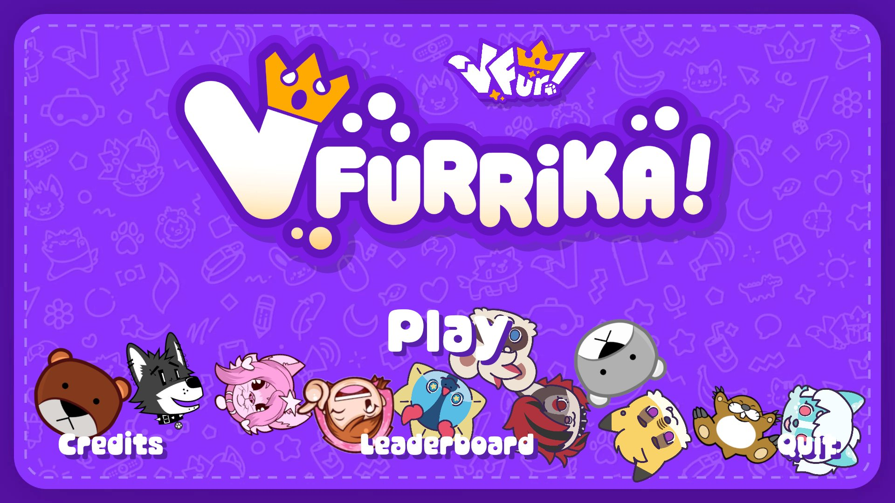
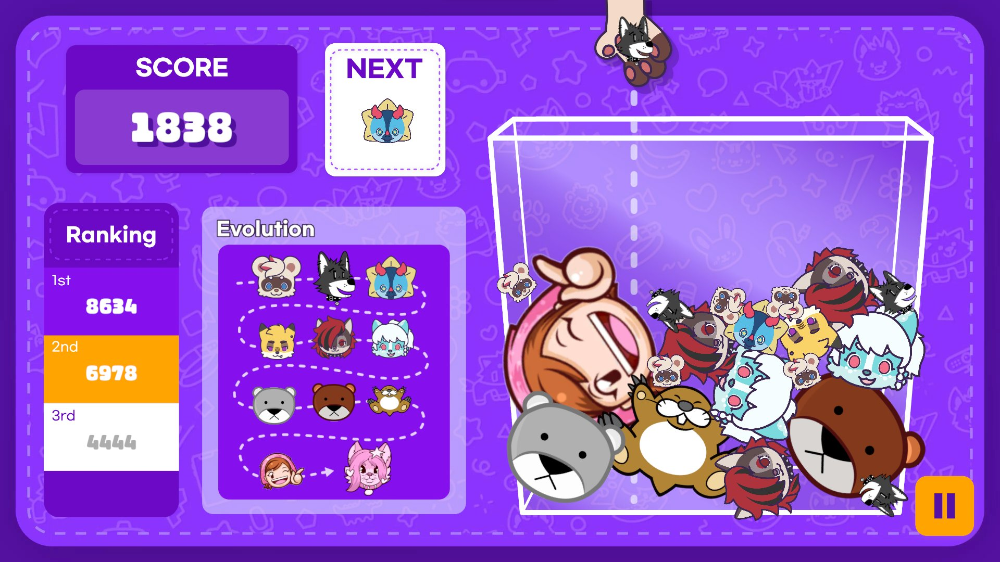
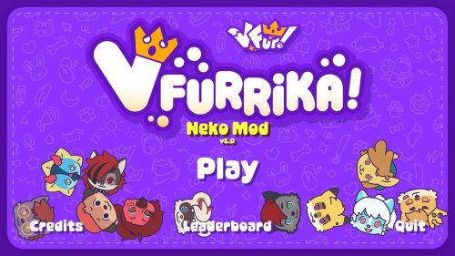
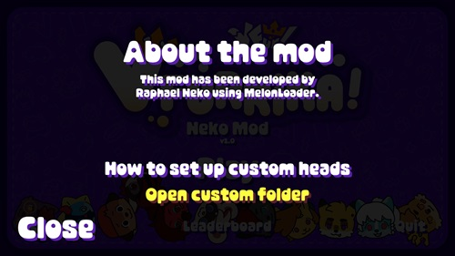
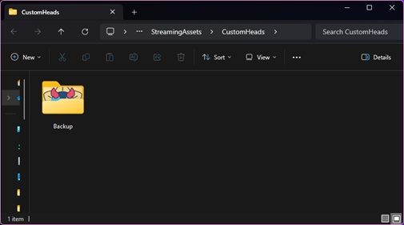
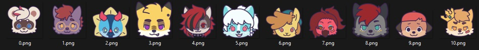

About the mod


Neko Mod is a mod for the game VFurrika which adds support for importing custom head sprites.
This mod is purely visual, it doesn't modify any of the physic or gameplay. Neko Mod is fully free and open source, so feel free to look around this repo, fork it, or even contribute to the mod too!
Please note that the custom heads sprites shown on my screenshots are not included with the mod! You must include your own sprite.
How to install the mod
1. Download the mod
Download the latest mod version zip.
Download
2. Extract to the game's folder
Open the game's folder (see the gif below for how to find the folder through Steam).

Extract all the content of the zip to the game's folder.

3. Check if the mod works
If you launch the game and you see the Neko Mod button on the title screen, your game is now patched! 🎉

How to set up custom heads
1. Open the custom heads folder
You can open the custom heads folder at any time directly through the Neko Mod Menu.


2. Put your custom sprites there
CUSTOM SPRITE RULES
- Your custom sprite must approximately match the base sprite sizes since custom sprites doesn't edit the actual collision shapes in-game. (You can find all the base sprites in the Backup folder if needed)
- All your sprites must be in ".png" format.
-
All the sprites must be named from 0 to 10.
Example:

- The mod works even if you just replace a few sprites. It only replaces the game's sprites if the sprite file is existing in the Custom Heads folder.
3. Relaunch the game, and see the result
If you see your custom head sprites directly on the title screen, everything works. Congratulations!
If the custom sprites doesn't display properly (too small or too big), or they don't appear at all, please make sure you followed the custom sprite rules on the previous step.
If you found a bug, or have any issue with setting up the mod, don't hesitate to contact me!
You can find all my socials in the footer down below.
Have fun! 🐈💜
/ Raphael Neko